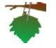
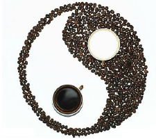
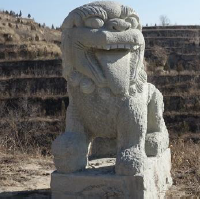
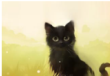
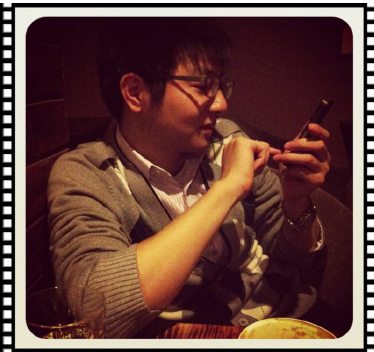
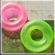

Mycat开源社区
Mycat前世今生
2013年阿里的Cobar在社区使用过程中发现存在一些比较严重的问题，及其使用限制，经过Mycat发起人第一次改良，第一代改良版——Mycat诞生。 Mycat开源以后，一些Cobar的用户参与了Mycat的开发，最终Mycat发展成为一个由众多软件公司的实力派架构师和资深开发人员维护的社区型开源软件。
2014年Mycat首次在上海的《中华架构师》大会上对外宣讲，更多的人参与进来，随后越来越多的项目采用了Mycat。
2015年5月，由核心参与者们一起编写的第一本官方权威指南《Mycat权威指南》电子版发布，累计超过500本，成为开源项目中的首创。
2015年10月为止，Mycat项目总共有16个Committer。
截至2015年11月，超过300个项目采用Mycat，涵盖银行、电信、电子商务、物流、移动应用、O2O的众多领域和公司。
截至2015年12月，超过4000名用户加群或研究讨论或测试或使用Mycat。
Mycat是基于开源cobar演变而来，我们对cobar的代码进行了彻底的重构，使用NIO重构了网络模块，并且优化了Buffer内核，增强了聚合，Join等基本特性，同时兼容绝大多数数据库成为通用的数据库中间件。1.4 版本以后 完全的脱离基本cobar内核，结合Mycat集群管理、自动扩容、智能优化，成为高性能的中间件。我们致力于开发高性能数据库中间而努力。永不收费，永不闭源，持续推动开源社区的发展。
Mycat吸引和聚集了一大批业内大数据和云计算方面的资深工程师，Mycat的发展壮大基于开源社区志愿者的持续努力，感谢社区志愿者的努力让Mycat更加强大，同时我们也欢迎社区更多的志愿者，特别是公司能够参与进来，参与Mycat的开发，一起推动社区的发展，为社区提供更好的开源中间件。
Mycat还不够强大，Mycat还有很多不足，欢迎社区志愿者的持续优化改进。
开源志愿者
Leaderus：
Mycat发起人，他入错了行。 他本来是应该做营销的，传销估计也行。 他最擅长的武功大概是装作泥害的样子，把别人忽悠到发呆，然后，滔滔不绝的宣讲他的理念。 他还真做到了，于是，你才有机会看到Mycat，中国第一本开源项目发起的众筹预售电子书。 他就是Leader-us，一个极具营销意识的S级编程王架构师。 他忽悠出了一个Mycat开源社区，然后这个社区成为国内大数据编程领域最有实力的社区，这里有颜值很高的新锐小清新，也有深藏不露的资深架构师，如果有一天风头慕名而来，你也不用诧异，因为你可能也是被风头看中的一员大将。 说了这么多，还是看看Leader-us出神入化的忽悠神功吧。
南哥：
曾经年少时不更事，为古惑电影所迷，遂取网名为南哥，有一阶段成了传说中的南哥，后来又从传说中跑了回来，一不小心混了10年的Java编程经验。多年前被女同事称作大哥，不过已经好久没听人这么说了，哎，我不做大哥好多年，看来我是逆生长了，越活越年轻。 好老庄，曾跟道家老师学习过。想强身，也曾一时兴起练过一段时间MMA。现就职于杭州某公司副总工程师，公司主营文博行业、360全景、三维等。在公司内部经常捣鼓一些框架，把玩一些新技术。从开源项目获益良多，mycat比较合胃口，所以贡献过多数据库分页语法支持、load data、压缩协议等功能，这里也要感谢那些反馈bug的网友。也欢迎大家一起交流magicdoom@gmail.com
冰风影：
不经意间就发现工作了十多年了，曾经精通过Delphi,后来转java，在一小公司干了七八年，从coder做到技术总监，带15人左右的研发团队，也曾经弄过一段时间的页游。定居在广州后，发现找管理方面的工作，大公司不要，小公司待遇低，无奈之下再次成为coder,架构师。目前主要的研究方向是大数据，分布式技术，Hadoop,Hive,Hbase,spark,业余时间打算贡 献给mycat。 爱好广泛，摄影等都有接触过，专门学习过资本交易，对股票，基金，保险，港股，期货，外汇，股权投资都有接触。 港股开户找我(免开户费),欢迎大家一起技术交流,可邮件联系:sunsoft@qq.com。
从零开始：
古语云 一生二，二生万物，而代码世界就是由1的世界构成，通过代码你可以构建无限可能，程序员不是屌丝， 程序员有自己性格，是有热情的有志青年。 从零开始仅是代码世界普通一员，励志在技术的世界里寻得自己的天地，苦学代码六年载，然未有所成就，再此留言实属惭愧。做过电信行业财务，银企支付等系统，现在于上海某公司做养老金融，研究数据搜索与分布式处理。 我想有一所房子，面朝大海，春暖花开， 10M宽带，能叫外卖，快递直达，不还房贷。 喜欢爬山，喜欢游泳，喜欢户外大自然的气息。 博客地址就是传说中的从零开始:songwie.com
黑白咖啡：
一个大雨滂沱的夜晚,灯光氤氲在雨中，黯淡了街道。我独坐在电脑前面注册人生的第一个QQ，为QQ名所伤神，突然一道春雷在我耳边炸想，看着黑白的世界，黑白咖啡四个字突然跳入了我的脑海。从此与咖啡结下了不解之缘，也因此与Java展开了热恋。 爱好广泛，音乐体育动漫自是不在话下，《黄帝内经》、《道德经》、《庄子》、《孙子兵法》都拜读过，家中至今收藏多部武学巨著，如易筋经洗髓经^_^曾经就职于某外包公司，拥有近两年的电信行业的开发经验。目前就职于南京某公司，主要的研究方向是大数据，分布式技术。
石头狮子：
尘世中学习型小码农一枚，目前正在努力打怪升级中。 典型90后，崇拜卢梭，亚当斯密。喜欢新鲜技术，爱折腾。 践行每天开源一小时，读开源项目源码，翻译些英文文档，写点总结。:) 被leader忽悠成为Mycat团队中的酱油党，努力向各位大牛学习中。
Rainbow：
从传统企业应用管理系统入门、成长于电商系统的架构与开发实现，目前从事大型国企的私有云建设中技术架构主导。已经在JAVA Web领域工作8年有余。从coder到架构师，随着职位变化从事工作也发生很大改变。但目前依然在一线coding。因为很享受coding所带来的快乐！目前主要研究应用架构(单一服务架构、垂直应用架构、分布式应用架构、流动计算架构)、PAAS平台、应用系统监控与管理。在业余时间主导并参与Mycat-web系统开发。 个人爱好吃、唱歌、旅游、看电影(科幻类，感悟人生类)。 技术源于生活，以生活思考业务，基于业务思考技术，以艺术家对技术落地！ 有兴趣对JAVA WEB架构, Mycat-Web的朋友，请联系：QQ:270300639 e-mail:accp_huangxin@163.com
Mycat铁杆粉丝：
你能想到写库用InnoDB，而读库用MyISAM的主从复制和读写分离方案么？ 他想到了，而且证明了这种模式的性能。 他就是Mycat的铁杆粉丝之一，杨超。 杨超,软件工程师科班毕业,1987年生,祖籍福建龙岩,目前就职于北京新华安徽数据服务有限公司,职位研发部经理,经过对mycat的研究和使用,首创mycat读写分离模式的智能优化方案,并成功将mycat已经正式应用于我公司的项目(社会辅助征信系统)中，目前系统在生产应用环境中已稳定运行快半年有余,截止今日系统未重启过.
正能量：
王金剑（正能量），网名Dreamcode，CSDN 认证专家。从事软件工作10年，曾在金融和互联网行业企业担任高级软件工程师、项目经理、高级DBA工程师职位。有银行信用卡系统和电子商务系统基础架构设计与开发经验，现在天津某跨国公司担任高级DBA工程师，负责公司电商网站数据库设计与优化、数据库架构规划及部署规范制定、核心应用的软件设计与开发等工作。个人博客：http://blog.csdn.net/dreamcode 目前为MyCat开源社区做了以下贡献： 1、撰写了《Mycat开源宣言》 2、基于Oracle和Mycat集群环境，针对Mycat对SQL92标准语句的支持情况，进行了较全面的测试。 详见文档：《SQL92标准语句Mycat支持测试（基于Oracle和MySQL）》 下载地址：https://github.com/MyCATApache/Mycat-doc/commit/4b13dd3719e806e6ab8309d9a221676537cc66a5
兵临城下：
从09年开始参加工作至今已6个年头了，从GPS定位到移动医疗再到电子商务，这一路走来让我收获颇多，也让我对人生有了一个深刻的认识，人生的路，需要自己一步一步的走过你才知道，没有对也没有错，人生需要这些挫折和成长。坚信梦想，不断努力，梦想一定可以实现。 以上来自我从业6年来真实的经历和感悟，目前在国内某大型电商企业担任高级开发工程师。
哇咔咔：
取名是个麻烦事，曾先后用过“runfriends”、“我是谁”、“一坨”、“哇咔咔”等网名，现在我也不知道该署哪个名了。 当年脑子进水选了生物工程专业，后来脑子水干了，做了程序员。本来以只有C程序员才是最牛逼的，却又稀里糊涂做了JAVA程序员。 不知不觉，一晃N年。转战IT领域的多个行业，曾一度迷茫，不知路在何方，今夕何夕，不知“我是谁”，最终进入互联网。 现在一家特别小的互联网公司写写代码，在各技术群里吹吹牛逼。有时也能被人叫做大神，不免有点小得意。不过，看看各个QQ技术群里那么多更大的神，又深觉自己功力不够。 后来技术领域令我赞叹的事情越来越多，每天在心里响起无数个“哇咔咔”。 现在MYCAT技术团队，打打酱油，跟各位大神学习。
和木：
古老的东方神功太极拳，遇到了兵器之王AK47，谁胜谁负，或者是可以合二为一？ 沧海一声笑，两岸水滔滔，估计就是身怀绝技的武者手持AK47，一排子弹扫过黄浦江时候溅起的浪花朵朵„. 和木，和气和睦(木)之意，十年IT从业经验，JAVA程序员、架构师、技术型产品经理 - 精通于网络编程、高性能高并发架构设计、JAVA性能调优 - 敢拼敢闯，小布什打萨达姆期间上过美伊战场打过AK-47突击步枪 - 特长跑步，在校、院系、公司运动会3000、5000米比赛中，基本上第一名或至少前三 - 爱好太极拳，陈式太极14代传人，曾获得全国武术比赛太极拳青年组银牌（2014） - 表达能力尚可，曾在某大学担任兼职讲师，讲授了一学期的管理类课程 - 管理能力尚可，毕业两年即担任10人开发团队项目经理，不过目前走技术路线，习惯于带领3~6人的精英技术团队打造精英产品 - 有一定的设计能力，曾获得华为UCD设计比赛一等奖 - 有一定的创新能力，有两篇技术发明专利（全部为第一发明人） - 一定的算法应用能力，能把数学应用于生产，曾设计了中国电信计费网的核心路由算法 - 团队合作能力较好，在前几个东家打工时，所在团队多次获得优秀团队、金牌团队称号 - 综合解决能力较强，在某过千万级软妹子的项目中，单兵负责了投标、需求、设计、开发、联调、运维一整条线近70%工作 开源感言： 过去十年，一直做闭源项目，未曾贡献开源力量，对自己这种只取不予的行为深感羞愧；这次应Leader之约，写了开发篇的第三、四、五章的内容，时间匆忙，如有错误请及时指正，本人定会虚心接受；也算是痛改前非，尽微薄之力为开源社区添砖加瓦！
Marshy：
非技术女，IDC销售1枚~本着对中国开源的支持，被Leader成功忽悠参与Mycat„„自传哪里是200字可以写得完的？不如就借一段较为接近的文字介绍一下自己吧：“忘掉远方是否可有出路 忘掉夜里月黑风高 踏雪过山双脚虽渐老 但靠两手一切达到 见面再喝到了熏醉 风雨中细说到心里 是与非过眼似烟吹 笑泪渗进了老井里 上路对唱过客乡里 春与秋撒满了希冀 夏与冬看透了生死 世代辈辈永远紧记 忘掉世间万千广阔土地 忘掉命里是否悲与喜 雾里看花一生走万里 但已了解不变道理
酱油师：
摩羯座，IT人。 当年为了祖国的花朵健康成长不误人子弟，毅然放弃了神圣的教师职业（→_→物理学），转行开始做苦工搬代码。 纯酱油师出生，没学过什么编译原理、汇编语言、数据结构„„ 一个机遇+一个RP爆发，成功走上了J2EE编程开发之路， 当然不知道这是上苍眷顾我还是要惩罚我，因为编程既是一个时刻充满挑战又是一个不归路，还好在良（hu）师（peng）益（gou）友（you） 的帮助下混了个架构师职位，从事着外人看起来高大上的工作，其实依然很苦逼„.，最近转行搞火热的大数据技术，这个才真算有点高大上的味道^_^ 。 本人不是什么大牛，只是比较好学，没事就喜欢捣腾一些新技术，也很乐意和志同道合的朋友喝茶聊天，当然不局限于技术。 目前在上海浙大网新易得任职研发总监，主要从事大数据相关工作，打个小广告有想转行搞hadoop相关的可以和我联系： blog: www.micmiu.com email: sjsky007@gmail.com weibo:http://weibo.com/ctosun
凭虚公子：
凭虚公子，目前于某电信软件供应商供职，负责数据架构方面工作。在进行系统去IOE的过程中，选择了Mycat，通过业务场景的分离和substring的分片方式，实现了可在线扩容的数据库集群架构。并将Mycat应用于运营商系统中，目前集群中数据量约6亿左右，系统已在线稳定运行一年以上，后续还将在更多的去IOE实践中使用。目前正在计划中的大型业务系统还有两个。
烟花易冷-奎：
多年的JAVA WEB开发经验，技术处女座。在恰当的场合使用恰当的互联网词汇，并且能一本正经逗你! 爱好广泛！联系方式QQ:294548915
海王星：
外号小强。 是个很敬业的程序猿，但也是个活泼的大男孩~热爱编程~也热爱游戏~ 从毕业开始一直从事这JAVA的开发工作，对着代码有着很深的执着~可以为了代码不吃不喝不睡~ 很喜欢鼓捣一些奇奇怪怪的东西。 目前开始成为一个刚入门的架构师，开始想着众多的大牛们努力的学习。 无意间接触Mycat,参与了Mycat的开发、测试。 目前是Mycat幕后的神秘人物，作为QA人员，负责代码的质量分析，自动化构建，版本规划等工作~
武：

大器当晚成，童年时贪玩还没开始记事经常爬树掏鸟窝，也从树上掉下来摔晕过，其实我是爬累了，掉下来躺着舒服就多睡了一会。小学一二年级都留级了，因为没考及格学校不让升级。第二个二年级我终于觉醒了，虽然还是天天爬树掏鸟下河抓鱼，但总能长期占据班级头名。从事软件行业后的前3年基本是打酱油的，2008年毕业至今，现在也7年了，最近的一两年才开始发力，也许我才刚刚觉醒，一位大神即将诞生。 本人爱好比较广泛：喜爱太极拳，但还没入门，曾经在大学跟随吴氏太极拳第4代传人战波老师傅学习了一个月吴氏太极老架。喜爱养信鸽，小学掏鸟窝养野鸽子开始，然后转成养家鸽，最后开始养信鸽，养了十年左右，现在没条件养了，以后必然会继续。弹弓是我从小的爱好，目前兜里随时揣着一把弹弓，不敢说百步穿杨，但敢5米打某人头顶上的苹果，如果你敢当模特顶着苹果的话。 联系方式QQ:152974495 邮箱：wdw1206@163.com
成都-顽石神：
Mycat PMO 之一 他本是DBA，却喜欢研究各种架构。从DB维护到数据架构，其间经历思考方式上的巨大转变，铭记领路人指点；从传统DB到NOSQL，再到大数据；从图形化报表到DB监控工具，再到DB中间件，感觉工作中越来越不能没有CODE。无意间知道Mycat，被它的架构深深吸引，进而加入志愿者大军，开始贡献代码，成了PMO。目前主要方向是Mycat+Mysql性能优化和Mycat推广，有兴趣的朋友可一起技术交流，Mail:250721835@qq.com
杭州-白：

Mycat PMO 之一 大学在读学生， 一直怀着没被踢出群感恩的心的酱油党， 努力学习中希望早日为 mycat 贡献代码， 也希望 mycat 会在 leader-us 的带领下走的更远。
allnet-深海：
Mycat 志愿者，高级java开发人员，熟悉mycat 目前负责南京某项目Mycat本地方案实施。
执笔相思：
Mycat 志愿者，高级java开发人员，熟悉mycat 参与mycat 开发 。
明明Ben：

从事软件开发10年，号称CODE、架构、管理、忽悠 等无一不通，北京打拼多年， 14年回到合肥，参与创建了一家O2O公司“一米兼职”，虽如此，但从未远离热爱的编码...
上海-袁文华：
已经做Java十六年了，拿过Oracle OCP。在公司主要负责系统架构，爱好接受新鲜事务，玩过python,ruby,css，js，android，html5。八字，风水，中医也都有研究。 年纪虽长，但入门Mycat算最晚。幸得Leader us的信任，负责Mycat eye的核心开发。希望能在Mycat社区共享自己的一份力。也打个小广告，在上海，有想招人的请联系我，QQ:1935326097
胡志辉：
望舒，仙剑迷，java程序员，喜欢捣鼓新东西，现在在一湖南本土电商企业捣鼓营销中心